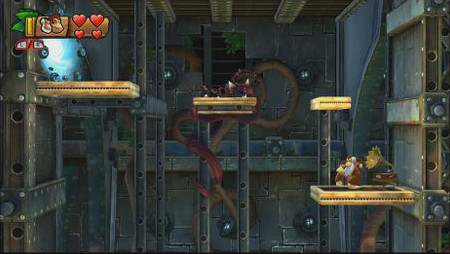
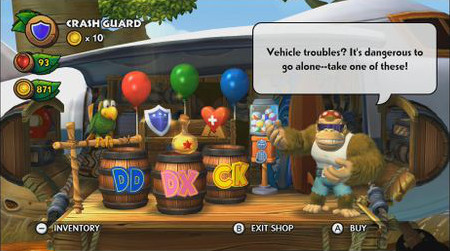
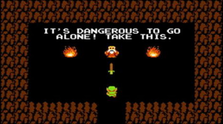

Donkey Kong Country Tropical Freeze Easter Eggs
-At the beginning of the first level, if Donkey Kong goes back into the plane and ground pounds next to the TVs, they will begin playing the title screen from Donkey Kong Country Returns.

-Next to the secret exit in level 1-3, Canopy Chaos, there is an old gramaphone. If Donkey Kong ground pounds next to it, it will begin playing the title music from Donkey Kong Country.
-In level 1-B, Busted Bayou, Samus' ship can be seen in the background.

-At Funky's Fly 'N' Buy, if you select the Crash Guard, Funky quotes The Legend of Zelda.
 -In the background of level 6-4, Blurry Flurry, the giant bat that chased Donkey Kong in level 4-5 of Donkey Kong Country Returns can be seen frozen in ice.